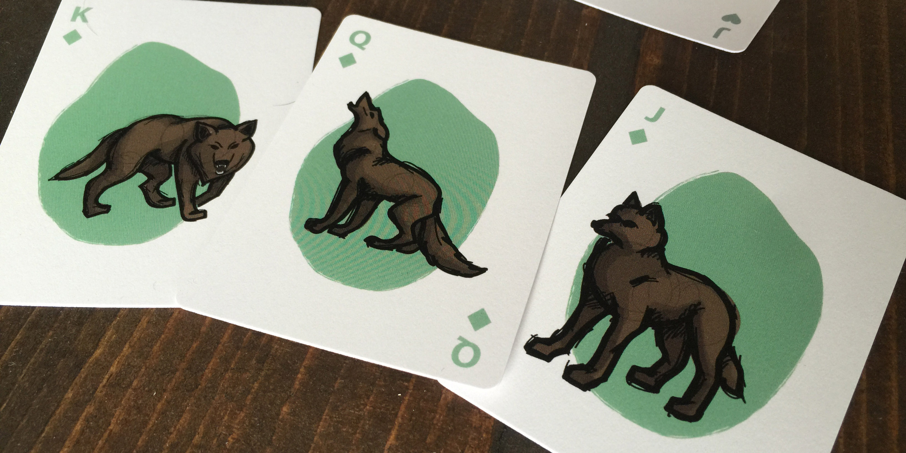
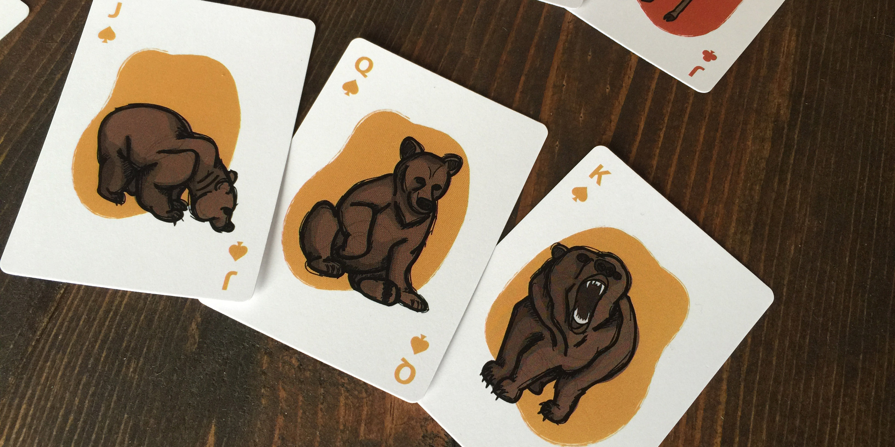
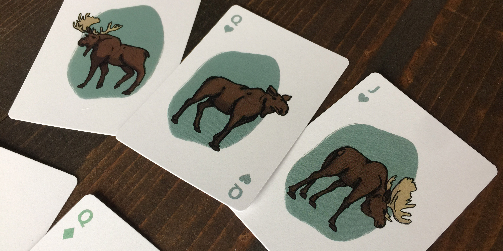
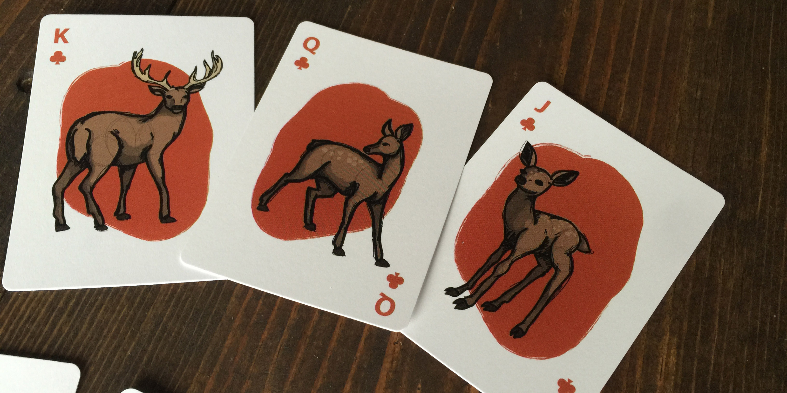
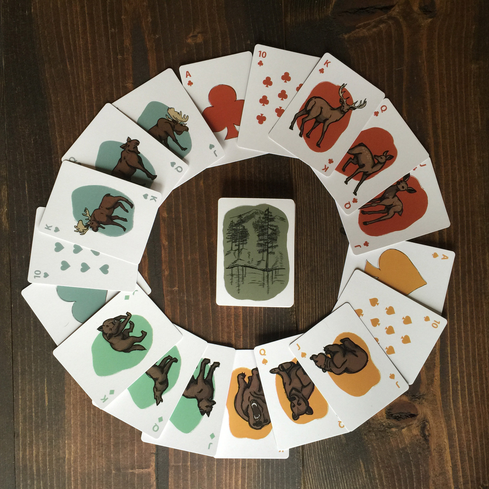

Introducing a PNW themed deck of 52 playing cards. Using the generic suits, I played with the color schemes and the face cards to create something unique.
   I deemed the Elk, Moose, Wolf, and Bear the royalty of the PNW.
These animals come from all parts of the PNW, but I think that Mt. Rainer is a fairly prominate part of the Northwest. As a result, I drew a scenic view of the mountain for the back of all the cards.
This was a really fun project! For a class project we were required to make a deck of 52 playing cards and we could choose any theme we wanted. At the time I was really into drawing animals, so I put those skills to good use and came up with a Pacific Northwest theme. In some of the close ups you can see that I left the sketch marks to make them look like they were all hand drawn right on the cards.
← Back to Portfolio